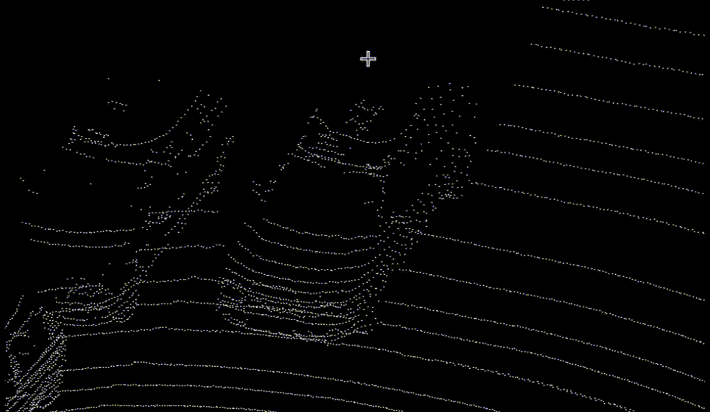
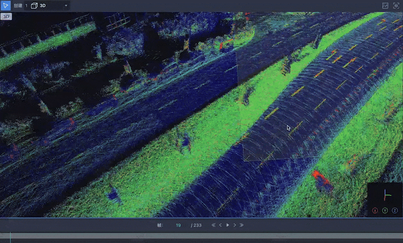

Overview
Software engineer with 8+ years of experience building backend infrastructure for autonomous systems, robotics, and computer vision. At Wing (Alphabet), I work on the human-in-the-loop layer of autonomous drone delivery: the safety-critical backend that lets operators supervise and command autonomous aircraft.
Recently rebuilt a multi-drone delivery PoC into a physics simulation where Gemini perceives and plans, deterministic checks decide what may fly, and failures escalate to a human. Previously led ML-assisted, human-verified 3D point-cloud annotation systems adopted by 20+ autonomous-vehicle and robotics customers.
Impact at a Glance
10×
Aircraft per operator
FAA-approved; main backend engineer for oversight
0
Safety violations
across 300 adversarial plans + 240 benchmark runs (simulation)
20+
AV / robotics customers
on 3D annotation platform
56%
Lower labeling cost
through workflow analytics
Selected Projects
01
Autonomous Aviation Infrastructure
WingBackend for the human-in-the-loop layer of Wing’s autonomous drone delivery — the “Google Maps for the sky” where operators supervise and command autonomous aircraft and handle only the exceptions.
Problem
Drone delivery must check every flight against spatial, temporal, and regulatory constraints, while enabling a single operator to safely oversee many aircraft at once.
My Role
Main backend engineer for OpenSky’s operator oversight system — building API handlers, 4D airspace validators, FAA rule types and data importers, the pilot License service, database migrations, and an end-to-end safety prober.
Technical Work
- Translated FAA rules (Part 107, LAANC, Class E2) into backend rule types and license validation.
- Built validators for 4D (3D + time) airspace volumes using S2 Geometry (self-intersection, loop orientation, altitude bounds, time window).
- Designed a surface Class E2 advisory rule and built the Flume pipeline that precomputes an airspace join offline (keyed by S2 cell and airport ID) into Wing’s geospatial data store, reducing the online check to a generic intersection test.
- Owned the pilot License service behind pre-flight license checks: per-country license types validated in the core service, with configuration rolled out environment by environment only after the serving binaries understand each new type; wrote the team’s license-type onboarding guide.
- Built PoC Gemini-in-the-loop operator tools where the model proposes and deterministic checks plus humans decide: schema-constrained drafting of 4D flight restrictions that operators accept or reject, and a read-only on-call incident triage assistant evaluated by time-cutoff replay of past incidents.
Impact
- 10× increase in aircraft per operator unlocked under FAA approval by shifting operators from per-flight monitoring to management by exception (restrictions, operating areas, pilot coverage, roles).
- Led an end-to-end blackbox prober that continuously exercises the emergency-landing command path on virtual aircraft in pre-production, asserting each state transition against deadlines; wrote the on-call debugging playbook that maps probe failures to causes, fixes, and owning teams.
- Rolled out transactional on-duty coverage updates to 100% of production via staged experiments; designed a dual-write Spanner license-table migration (without a maintenance window) and executed a phased, metrics-gated legacy API turndown.
02
TAnGY: Gemini-Planned Multi-Drone Delivery in Simulation
PoC → Independent R&DPhysics-simulated multi-drone delivery coordinator (PoC) — Gemini proposes plans, deterministic code decides what may fly, and failures escalate to a human whose replies pass the same checks.
Original PoC demo (Three.js + Flask), before the MuJoCo rebuild
Problem
Vision-language and reasoning models can translate open-ended mission descriptions into multi-drone task plans, but in a safety-critical airspace setting, a hallucinated or unsafe plan must never reach flight execution.
My Role
Co-built the original PoC (Three.js + Flask); independently rebuilt it end to end in MuJoCo with quadrotor physics, pixel-based perception, a deterministic Simplex safety layer, and an automated evaluation benchmark.
Technical Work
- Simplex architecture: Gemini turns mission text and scene tracks into a task graph; deterministic code assigns drones, times trajectories, and checks geofence, altitude, no-fly zones, separation, and battery — routing violations back to Gemini (up to 3 rounds) and then to a human operator under the same checks.
- Perception from pixels: Gemini Robotics-ER points at objects in simulated RGB-D camera frames; points are back-projected with depth and tracked via a Kalman filter with Hungarian association (recall 0.80–0.82 at precision 0.95–0.96).
- Flight control & onboard monitor: geometric SE(3) controller settles a 1 m step in 1.6 s and holds hover within 1 cm under a 2 N side wind; an independent onboard monitor runs every tick to land the drone without relying on cloud connectivity.
- Independent ground-truth audit: a 50 Hz auditor sharing zero code with the planner checker scores safety violations against simulator state, and every model stage is benchmarked against an oracle baseline.
- (Original PoC) Text descriptions generate custom 3D test scenes.
- (Original PoC) Logs commands, reasoning, actions, and feedback as episodes for a reinforcement-learning dataset.
Impact
- 0 safety violations across 300 adversarial plans, 8 adversarial physics episodes, and 240 benchmark runs.
- 20/20 end-to-end simulated missions (live Gemini calls) delivered the payload to the right target; on a 10-task benchmark suite (3 runs per task), Gemini Robotics-ER planning improved from 12/30 to 30/30 once the planner saw the scene (annotated scout image, own drones masked, targets described by color).
03
Safety-Critical Configuration & Authorization
WingAuthorization for human-in-the-loop operations — re-architected access control so every RPC, including emergency landing, checks who may issue it, moving from database-persisted roles mirrored into an ACL service to config-driven RBAC.
Problem
The legacy authorization flow persisted per-organization roles in the database and synced them asynchronously into a Zanzibar-based group-membership service. The sync could drift, and adding a role required handler changes, a backfill, and a re-sync — all while live airspace operations could not be interrupted.
My Role
Eng lead and co-author of the redesign; led the role-configuration schema, validation, and phased migration plan.
Technical Work
- Decomposed the monolith into three services: Organization, User, and Member License Management.
- Replaced per-organization database roles with a global, schema-validated configuration mapping roles to permissions, with per-RPC permission annotations.
- Implemented deny-by-default per-RPC permission checks (one keyed Spanner membership read plus an in-memory lookup), including safety-critical commands such as pilot-issued emergency landing, shipping configuration before code.
Impact
- Retired the database-to-ACL sync dependency across live safety-critical services via a flag-guarded, multi-quarter migration.
- Turned adding or updating a role into a reviewed configuration change instead of handler code changes, a database backfill, and an ACL re-sync.
04
3D Perception & Annotation Platform
AppenML-assisted, human-verified labeling for autonomous-vehicle and robotics perception — clustering and models pre-label 3D point clouds, annotators correct and verify; led from prototype to production.


Problem
State-of-the-art detection models needed extensive labeling, yet annotating large LiDAR scenes was slow — and heavy scenes crashed browsers.
My Role
Led full-stack development (React/Three.js frontend, Flask/Spring backend) and drove ML-assisted annotation from prototype to production.
Technical Work
- Click-to-annotate: fast DBSCAN clustering on k-d trees auto-generates bounding boxes.
- GPU shaders for point coloring plus octree frustum culling: smooth rendering from 1M to 10M+ points.
- Semantic segmentation for point-level classification; real-time AI-assisted interaction.
- Annotator-telemetry dashboards giving operations teams visibility into worker bottlenecks.
- Sensor fusion experiments: real-time projection of 3D LiDAR points into 2D camera views; multi-sensor (LiDAR, radar, camera) fusion supporting annotation accuracy.
Impact
- 20+ AV/robotics clients — flagship product born from a weekend PoC.
- 56% lower labeling costs through workflow analytics.
Credentials
- Master's and Bachelor's degrees in Computer Science, NTHU
- EB-2 National Interest Waiver (NIW) for contributions to autonomous / uncrewed systems and robotics
- Google C++ Readability (2024)